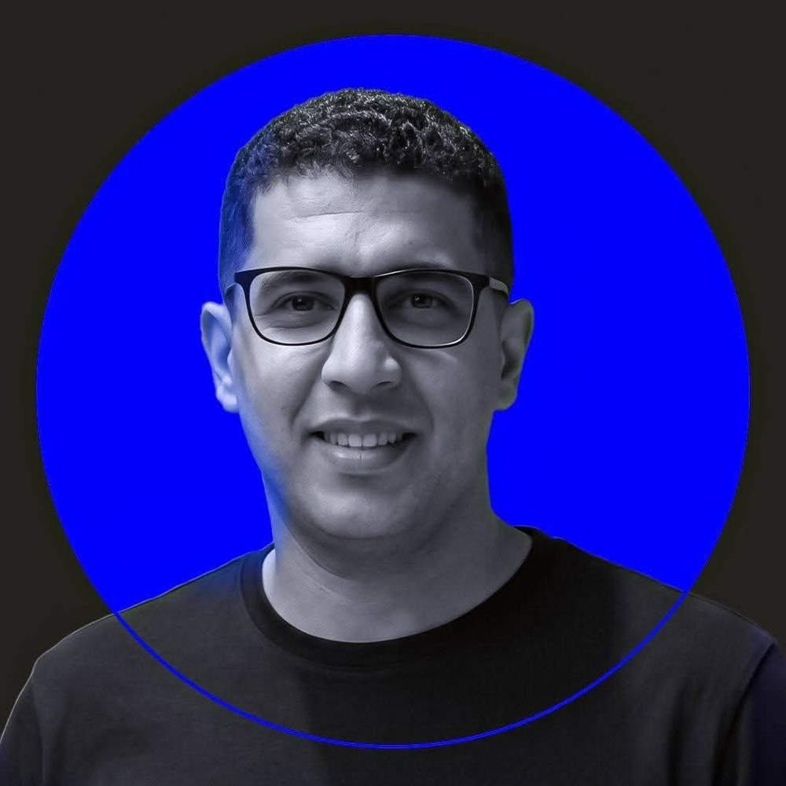

SENIOR GRAPHIC DESIGNER
أنا اسلام محمد. بحوّل الأفكار لتصميمات سوشيال ميديا وموشن جرافيك، بخبرة ٧ سنين في المجال.
07سنين خبرة
في السوشيال ميديا
في السوشيال ميديا
تصميمات تحكي الفكرة.
وشغل يتكلم عن نفسه.
SELECTED VISUALS / 01—03


SOCIAL
BY DESIGN.↗
BY DESIGN.↗
ميلادي · GREGORIAN—
هجري · HIJRI—
01 / SELECTED WORK
كل عميل،
حكاية بصرية.
مختارات من تصميمات السوشيال ميديا.
اختار مشروع وشوف الحكاية كاملة.
02 / IN MOTION
الفكرة،
وهي بتتحرك.
مختارات من أعمال الموشن جرافيك.
IN MOTION
MY LANGUAGE.✳
03 / THE DESIGNER
اسلام محمد.
ورا كل تصميم.
سينيور جرافيك ديزاين، خبرة ٧ سنين في مجال السوشيال ميديا.
هنا مجموعة من شغلي مع عملاء في مجالات مختلفة، من المطاعم والمنتجات لحد الصيدليات والعيادات والتكييف.
تصميمات السوشيال ميدياموشن جرافيك
HAVE SOMETHING IN MIND?